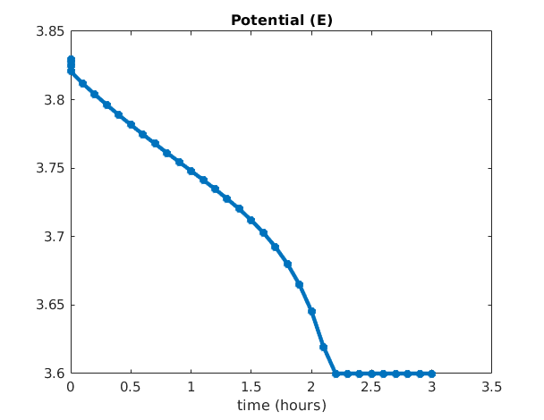
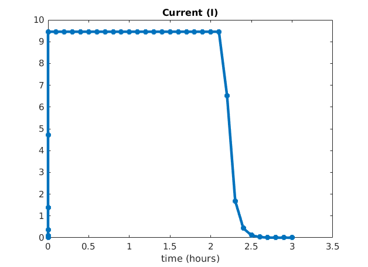

Battery 1D model
Generated from runBattery1D.m
Include presentation of the test case (use rst format)
% load MRST modules
mrstModule add ad-core multimodel mrst-gui battery mpfa
% We create an instance of BatteryInputParams. This class is used to initiate the battery simulator and it propagates
% all the parameters through out the submodels.
paramobj = BatteryInputParams();
% The input parameters can be given in json format. The json file is read and used to populate the paramobj object.
p = mfilename('fullpath'); p = fileparts(p);
filename = fullfile(p, '../Battery/lithiumbattery.json');
paramobj = jsonfileToParams(paramobj, filename);
% Some shortcuts used for the sub-models
ne = 'NegativeElectrode';
pe = 'PositiveElectrode';
eac = 'ElectrodeActiveComponent';
cc = 'CurrentCollector';
elyte = 'Electrolyte';
thermal = 'ThermalModel';
We setup the battery geometry.
Here, we use a 1D model and the class BatteryGenerator1D already contains the discretization parameters
gen = BatteryGenerator1D();
% We update pamobj with grid data
paramobj = gen.updateBatteryInputParams(paramobj);
% In this case, we change some of the values of the paramaters that were given in the json file to other values. This is
% done directly on the object paramobj.
paramobj.(ne).(cc).EffectiveElectricalConductivity = 100;
paramobj.(pe).(cc).EffectiveElectricalConductivity = 100;
paramobj.(thermal).externalHeatTransferCoefficient = 1000;
paramobj.(thermal).externalTemperature = paramobj.initT;
The Battery model is initialized by sending paramobj to the Battery class constructor
see Battery.Battery
model = Battery(paramobj);
We compute the cell capacity and chose a discharge rate
C = computeCellCapacity(model);
CRate = 1/5;
inputI = (C/hour)*CRate; % current
We setup the schedule
We use different time step for the activation phase (small time steps) and the following discharging phase
% We start with rampup time steps to go through the activation phase
dt1 = rampupTimesteps(0.1, 0.1, 5);
% We choose time steps for the rest of the simulation (discharge phase)
dt2 = 0.1*hour*ones(30, 1);
% We concatenate the time steps
dt = [dt1; dt2];
times = [0; cumsum(dt)];
tt = times(2 : end);
step = struct('val', diff(times), 'control', ones(numel(tt), 1));
% We set up a stopping function. Here, the simulation will stop if the output voltage reach a value smaller than 2. This
% stopping function will not be triggered in this case as we switch to voltage control when E=3.6 (see value of inputE
% below).
pe = 'PositiveElectrode';
cc = 'CurrentCollector';
stopFunc = @(model, state, state_prev) (state.(pe).(cc).E < 2.0);
tup = 0.1; % rampup value for the current function, see rampupSwitchControl
inputE = 3.6; % Value when current control switches to voltage control
srcfunc = @(time, I, E) rampupSwitchControl(time, tup, I, E, inputI, inputE);
% we setup the control by assigning a source and stop function.
control = repmat(struct('src', srcfunc, 'stopFunction', stopFunc), 1, 1);
% This control is used to set up the schedule
schedule = struct('control', control, 'step', step);
We setup the initial state
initstate = model.setupInitialState();
% Setup nonlinear solver
nls = NonLinearSolver();
% Change default maximum iteration number in nonlinear solver
nls.maxIterations = 10;
% Change default behavior of nonlinear solver, in case of error
nls.errorOnFailure = false;
% Change default tolerance for nonlinear solver
model.nonlinearTolerance = 1e-5;
% Set verbosity
model.verbose = false;
% Run simulation
[wellSols, states, report] = simulateScheduleAD(initstate, model, schedule, 'OutputMinisteps', true, 'NonLinearSolver', nls);
Solving timestep 01/36: -> 3 Milliseconds
Solving timestep 02/36: 3 Milliseconds -> 6 Milliseconds
Solving timestep 03/36: 6 Milliseconds -> 12 Milliseconds
Solving timestep 04/36: 12 Milliseconds -> 25 Milliseconds
Solving timestep 05/36: 25 Milliseconds -> 50 Milliseconds
Solving timestep 06/36: 50 Milliseconds -> 100 Milliseconds
Solving timestep 07/36: 100 Milliseconds -> 360 Seconds, 100 Milliseconds
Solving timestep 08/36: 360 Seconds, 100 Milliseconds -> 720 Seconds, 100 Milliseconds
...
We process output and recover the output voltage and current from the output states.
ind = cellfun(@(x) not(isempty(x)), states);
states = states(ind);
Enew = cellfun(@(x) x.(pe).(cc).E, states);
Inew = cellfun(@(x) x.(pe).(cc).I, states);
time = cellfun(@(x) x.time, states);
We plot the the output voltage and current
figure
plot((time/hour), Enew, '*-', 'linewidth', 3)
title('Potential (E)')
xlabel('time (hours)')
figure
plot((time/hour), Inew, '*-', 'linewidth', 3)
title('Current (I)')
xlabel('time (hours)')

